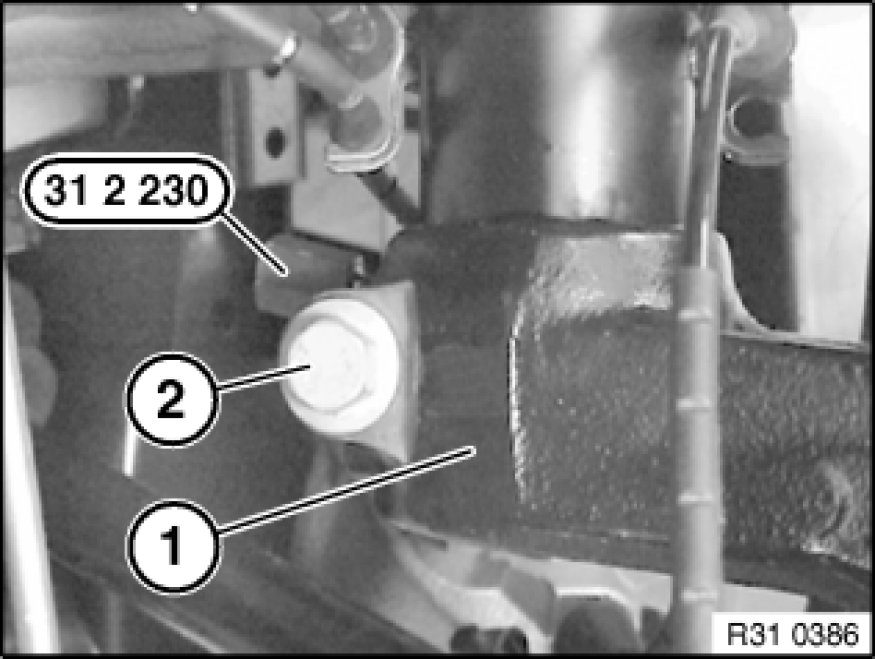
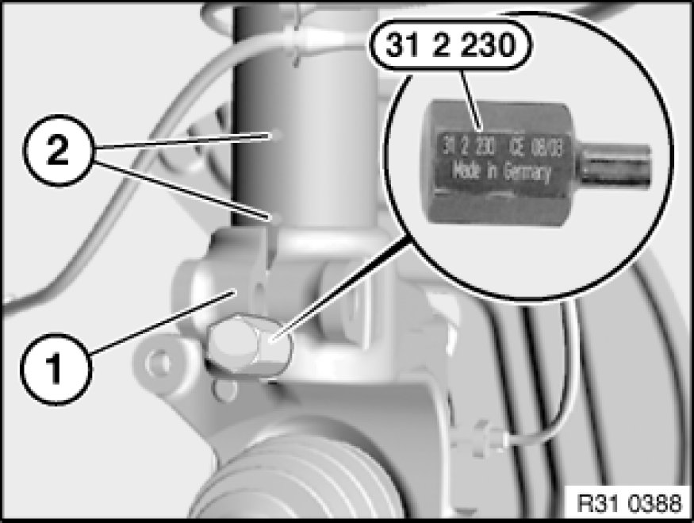

Removing and Installing/Replacing Left or Right Swivel Bearing
31 21 090 - Removing and installing/replacing left or right swivel bearing

Special tools required:
- 31 2 230 31 2 230 Socket

Remove front wheel Removing or Installing Front or Rear Wheel.
Important!
Expand turning lock sufficiently to avoid damaging thread when releasing collar nut.
Release collar nut; to do so, press brake pedal to floor.
Installation Note:
Replace collar nut, oil collar nut/wheel bearing contact surface lightly and tighten down.
No oil permitted on thread of shaft journal or collar nut.
Tightening torque 31 21 2AZ Front Axle.
Secure collar nut by positive peening on flat areas of output shaft.

Remove brake disc Removing and Installing/Replacing Both Front Brake Discs.
Replacement only: Drive out drive flange Replacing Bearing for Front Wheel.
Remove front pulse generator Replacing One Front Pulse Generator from swivel bearing.
Remove tie rod end from swivel bearing Replacing Left or Right Tie Rod.
Remove guide joint from swivel bearing Removing and Installing/Replacing Guide Joint in Swivel Bearing.
Remove control arm from swivel bearing Front Axle.
Remove stabilizer link from spring strut Removing and Installing/Replacing Push Rod (Stabilizer Link) for Left/Right Stabilizer.
Important!
Risk of damage!
Do not drive output shaft out of drive flange with an impact tool.
Turn swivel bearing to one side.
Press output shaft out of drive flange Pressing Output Shaft Out of Drive Flange (Wheel Hub) and Drawing In and tie up.

Important!
- Check sensor head and line from pulse generator prior to installation for external damage, replacing if necessary.

Support swivel bearing (1) with workshop jack and a suitable mounting.
Release nut and remove bolt (2) towards front.
Expand swivel bearing (1) with special tool 31 2 230 31 2 230 Socket.
Lower workshop jack.
Remove swivel bearing (1).
Installation Note:
Replace self-locking nut.
Tightening torque 31 31 3AZ Spring Struts (Front).

Installation Note:
Keep press fit of swivel gearing and spring strut in lower area clean and free from oil and grease.
Spread swivel bearing (1) with special tool 31 2 230 31 2 230 Socket, align by means of gap to positioning pins (2) on back of spring strut and raise as far as it will go.
Replacement:
Modify dust sleeve (1).
Modify brake guard plate (2).
Installation Note:
Install new wheel bearing Replacing Bearing for Front Wheel.
Draw in drive flange Replacing Bearing for Front Wheel.

After installation:
- Replacement only: Perform chassis alignment check